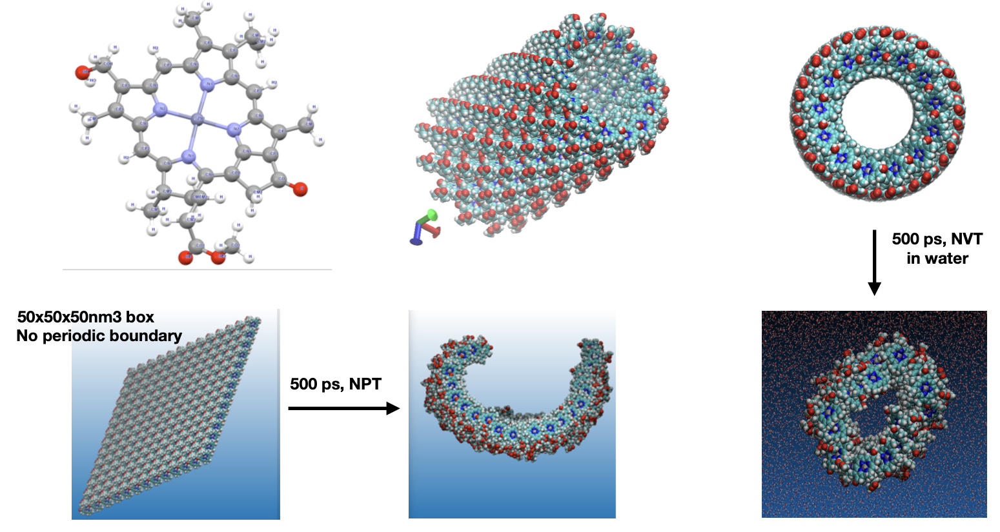
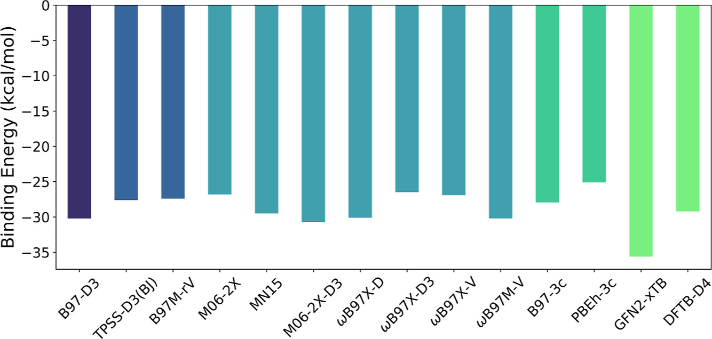
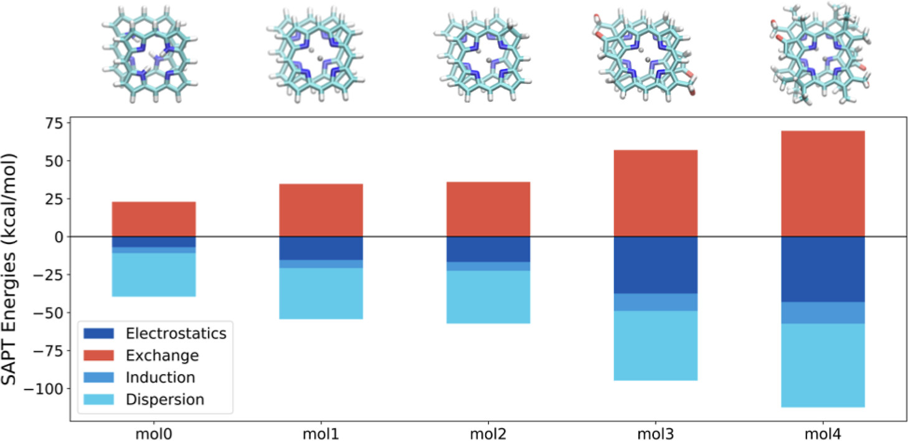

Some photosynthetic bacteria have nano-sized antennas called chlorosomes that
capture light efficiently. In this project, I investigate biomimetic zinc-porphyrin supramolecular
structures inspired by chlorosomes through atomistic simulations (GROMACS),
and perform quantum chemical calculations to understand charge transport properties. These studies aim to understand
the structure-function
relationships and contribute to the development of new, green, and sustainable solar energy systems.
Figure shows the construction and MD studies of the nanotubes.
Theoretical Study of the Structure and Binding Energies of Dimers of Zn(II)-Porphyrin Derivatives
Publication link


Zinc-complexed porphyrin and chlorophyll derivatives form functional aggregates
with remarkable photophysical and optoelectronic properties. Understanding the
type and strength of intermolecular interactions between these molecules is
essential for designing new materials with desired morphology and functionality. In this project
I did a systematic study of the interaction energy (IE) in zinc-porphyrin complexes with
increasing structural complexity so that the effect of substitutions on the dimer IEs is quantified.
I used semiempirical, density functional, and symmetry-adapted perturbation methods to find a
good balance of cost and accuracy. Moreover, the types of intermolecular interactions are
evaluated using energy decomposition analysis based on the symmetry-adapted perturbation theory (SAPT).
Projects
Prediction of reorganization energy using machine learning
Publication link

Organic semiconductors are an important class of (opto)electronic materials,
with a wide range of potential applications from photovoltaics to artificial nerves.
The goal of this project was to enable large-scale screening for high-performance
organic semiconductors by rapid prediction of reorganization energy
using machine-learning methods. It was on the cover
of ACS magazine JPCA.
The project involved creation of a dataset (a),
calculation of the reorganization energy with DFT methods (b),
and prediction of the reorganization energy (c). The reorganization energy
is depicted as greek Lambda is the target value.
A Quantitative structure–property study of reorganization energy
Publication link

I curated acompound set of 171, which was derived from known p-type OSCs built from moieties such as
acenes, thiophenes, and pentalenes and studied the structure-property relationships.
It was highlighted in the themed collection:
Celebrating recent achievements in chemical science in Turkiye.
Here is a recent notebook
where I explored clustering and
interactive plotting with molplotly using this dataset.